In MVC, which component handles user input?
- Controller
- Model
- View
- Broker
Show answer
A. Controller
The last two system types. Interactive systems care most about usability and modifiability, and their mainstream pattern is Model-View-Controller: the model holds the data and core functionality, views display it, and controllers turn user input into requests on the model, which then notifies every view. Hierarchical systems are built in levels; in the layered pattern each layer provides services to the layer above through a defined interface and uses only the layer below, which gives modifiability, portability, security and reuse.
Model = data and functionality; View = output representation; Controller = paired with a view, handles input.
User → controller → model (updates) → notifies views → views refresh → user. Views observe the model.
Modifiability (swap or add UIs), usability (different UIs for different users), reusability.
Each layer offers services upward through an interface; qualities are modifiability, portability, security, reusability.
Final 252 Q4-1 (2.5 marks) asked you to recognise MVC in a children’s app and draw its component diagram; Midterm 261 Q6 matched a museum-ticketing system to MVC and a payroll system to layered.
Every original slide is shown unchanged. Yellow marks on a slide point to a numbered note: hover or tap a mark to jump to its note, and hover a note to see its marks. Questions tagged Past exam appeared on a real paper; Prediction questions are likely angles, not confirmed.
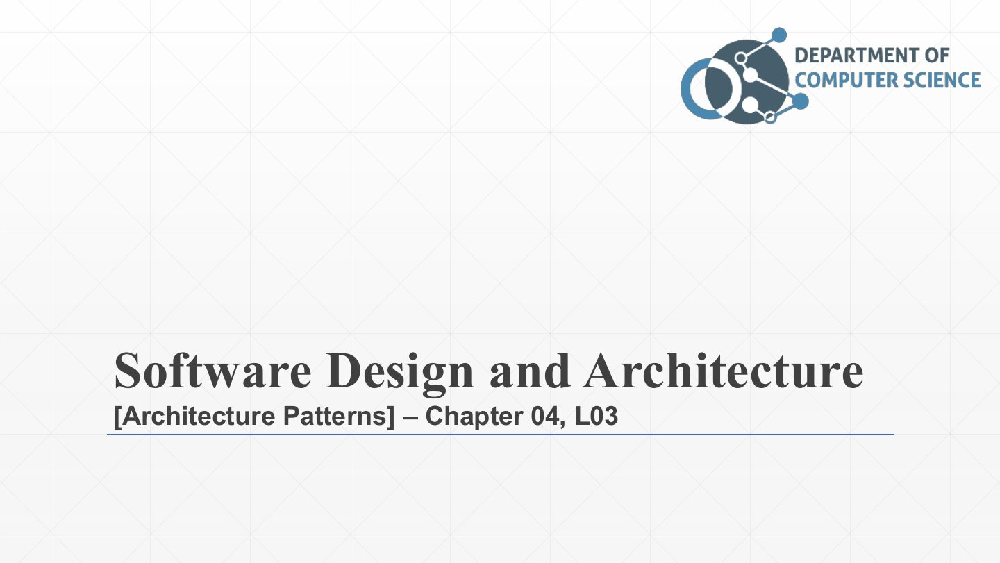
Final architecture-patterns lecture: the patterns for interactive systems (MVC) and hierarchical systems (layered). After this, the course moves from architecture to detailed design.
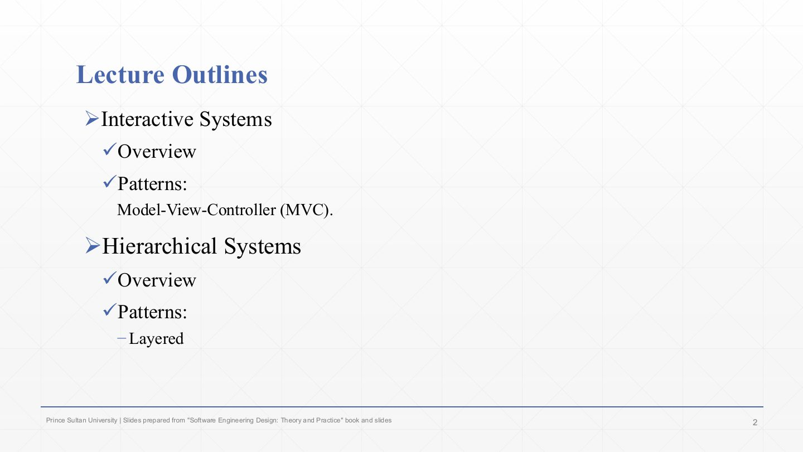
Interactive systems → Model-View-Controller (MVC).
Hierarchical systems → layered.
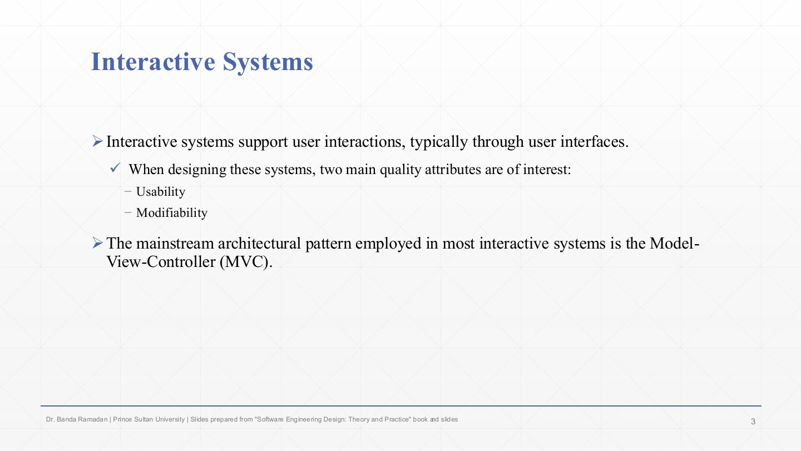
Interactive systems support user interaction, typically through user interfaces.
Two quality attributes matter most: usability (the UI must be easy to use) and modifiability (UIs change often, so changing them must be cheap).
The mainstream pattern for interactive systems is MVC, because it isolates the part that changes most (the UI) from the data and rules.
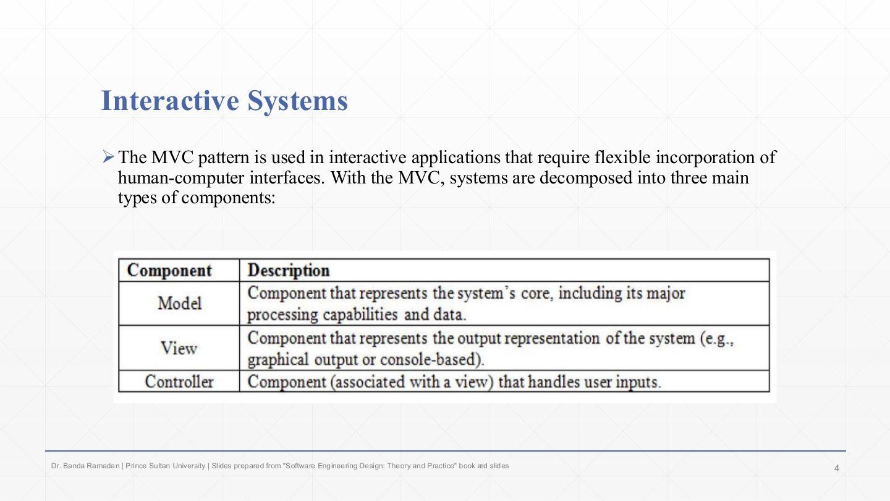
MVC is for interactive applications that need flexible human-computer interfaces: the UI can be replaced or multiplied without touching the core.
The three component types (the table):
In MVC, which component handles user input?
A. Controller
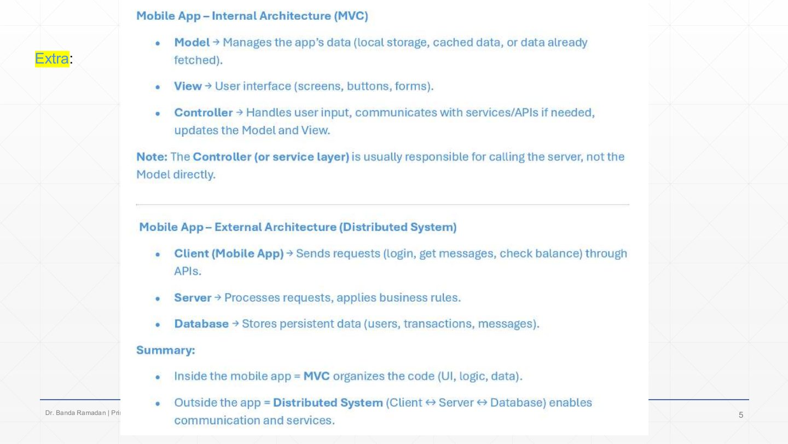
Inside a mobile app, MVC organises the code: the model manages the app’s data (local storage, cache, data already fetched), the view is the UI (screens, buttons, forms), the controller handles input, calls services, and updates model and view.
Note: the controller (or a service layer) usually calls the server, not the model directly.
The same app is also part of a distributed system: the mobile client sends requests (login, messages, balance) through APIs to a server that applies business rules and uses a database. Summary: MVC inside the app, client–server outside it. Patterns combine at different levels.
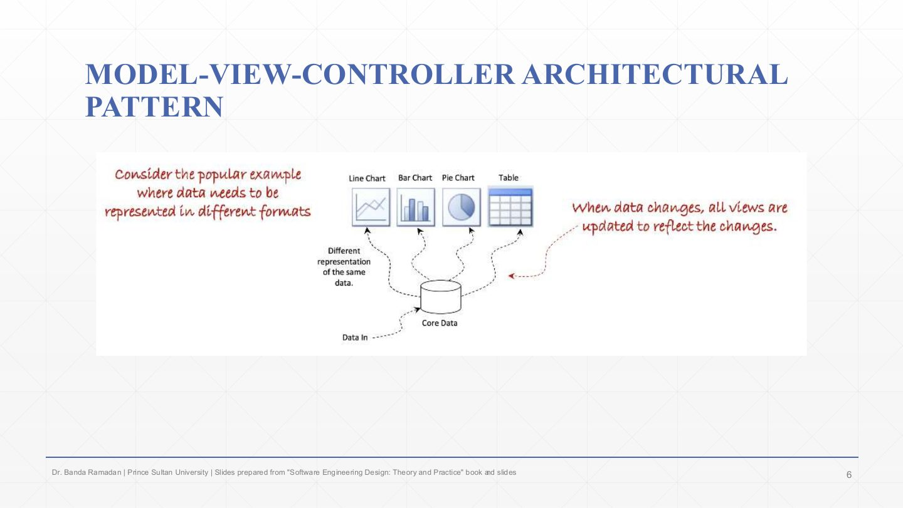
The motivating example: the same core data is shown in different formats (line chart, bar chart, pie chart, table). Each is a different representation of one data set.
When the data changes, all views must update to reflect it. MVC achieves that by keeping one model and letting every view observe it, instead of each view keeping its own copy that could drift.
Which pattern best fits an app that shows the same data in several synchronised views that the user can edit?
A. MVC
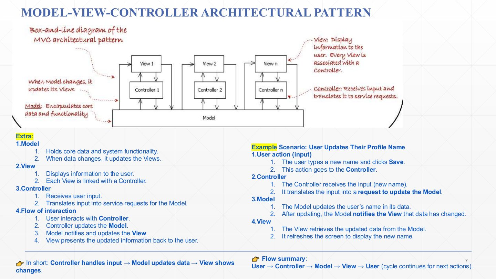
Model: holds the core data and system functionality; when the data changes, it updates (notifies) the views. In the box-and-line diagram one model sits under all the views and controllers.
View: displays information to the user. Every view is linked with a controller (View 1/Controller 1 … View n/Controller n).
Controller: receives user input and translates it into service requests for the model.
Flow: the user interacts with a controller → the controller updates the model → the model notifies the views → the views present the updated information. Then the cycle repeats.
Example (changing a profile name): the user types a new name and clicks Save; the controller receives it and asks the model to update; the model changes the name and notifies the view; the view fetches the new data and refreshes the screen.
Safari Explorer: a mobile app helps preschoolers (ages 3–5) learn about animals and their sounds. It must be highly responsive to touch and visually engaging. It has a Database with animal names, image file paths and audio clips, an Interactive Map (the graphical world map of animals), and a Selection Handler that detects a tap on a continent or animal and decides what to display next. Identify the architecture pattern that fits and draw its component diagram.
Model-View-Controller (MVC). The UI must stay responsive and visual while the data and input handling change independently. Model: the Animal Database (names, image paths, audio clips). View: the Interactive Map (shows continents, animals, images and plays sounds). Controller: the Selection Handler (receives the tap, asks the model for the selected animal and tells the view what to show next). Diagram: Child taps the View → View passes the user event to the Controller → Controller selects the animal in the Model → Model updates/notifies the View.
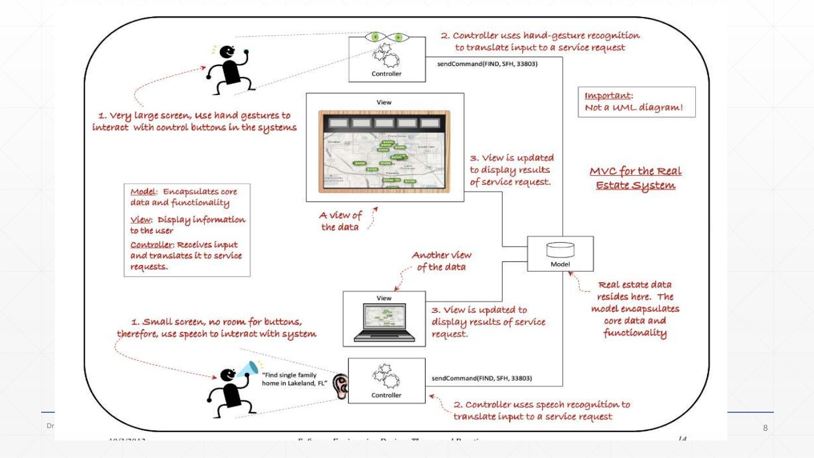
MVC for a real-estate system with two very different interfaces (not a UML diagram). The model in the middle holds the real-estate data and the core functionality.
Two controllers translate input into the same kind of service request, sendCommand(FIND, 5FH, 33803): on the very large screen, a controller uses hand-gesture recognition; on the small screen (no room for buttons), a controller uses speech recognition (“Find single family home in Lakeland, FL”).
Each view is updated to display the results of the service request: two views of the same data. Adding a third interface would mean adding a view–controller pair, without touching the model.
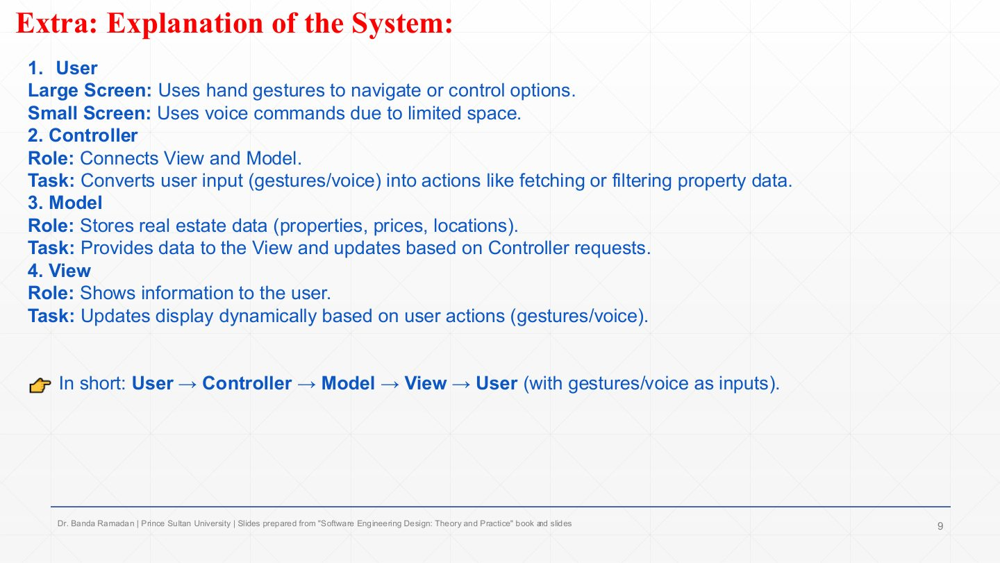
User: on the large screen uses hand gestures; on the small screen uses voice commands.
Controller: connects view and model, converting gestures or voice into actions such as fetching or filtering property data.
Model: stores the real-estate data (properties, prices, locations), provides it to the views and updates when controllers ask.
View: shows the information and updates dynamically after each user action. In short: user → controller → model → view → user.
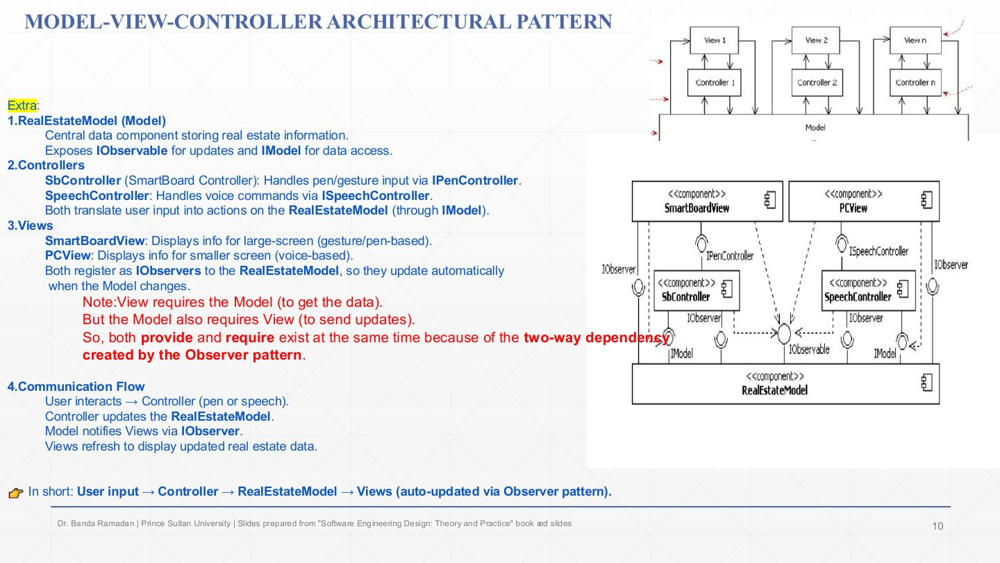
RealEstateModel: the central data component. It provides IObservable (views register for updates) and IModel (data access and commands).
Controllers: SbController (SmartBoard) handles pen/gesture input through IPenController; SpeechController handles voice through ISpeechController. Both require IModel to act on the model.
Views: SmartBoardView (large screen) and PCView (small screen). Both provide IObserver and register with the model, so they update automatically when it changes.
Why both provide and require: a view needs the model (to get data) and the model needs the views (to notify them). That two-way dependency is created by the Observer pattern (Chapter 7).
Flow: user → controller (pen or speech) → RealEstateModel updated → model notifies views through IObserver → views refresh.
In the real-estate MVC component diagram, why does the model provide IObservable while each view provides IObserver?
Views register with the model through IObservable, and the model calls each view back through IObserver when its data changes (the Observer pattern). So a view requires the model for data, and the model requires the views to notify them.
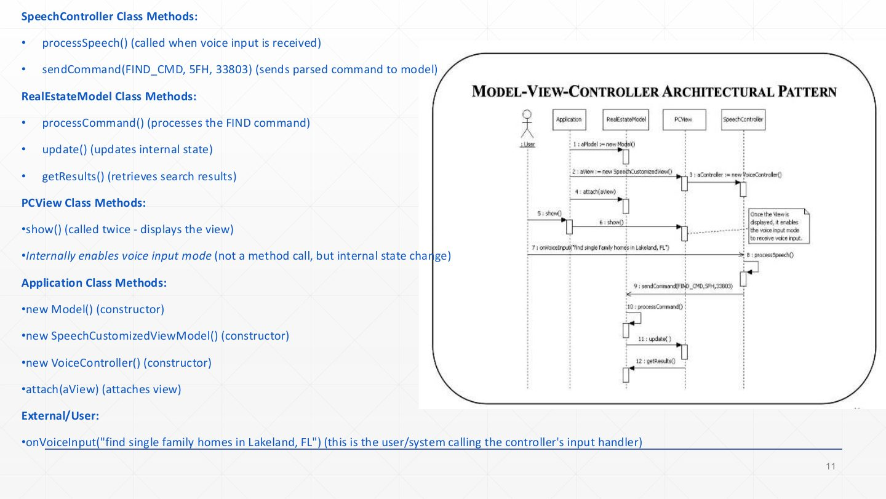
SpeechController: processSpeech() is called when voice input arrives; sendCommand(FIND_CMD, 5FH, 33803) sends the parsed command to the model (messages 8–9).
RealEstateModel: processCommand() handles the FIND command, update() changes its internal state (and notifies views), getResults() is how views fetch the search results (messages 10–12).
PCView: show() (called twice) displays the view; enabling voice input mode is an internal state change, not a message.
Application (set-up, messages 1–5): creates the model, the speech-customised view and the voice controller, and attach(aView)es the view to the model.
User: onVoiceInput("find single family homes in Lakeland, FL") starts the interaction (message 7). Reading order: set-up, then input → controller → model → view.
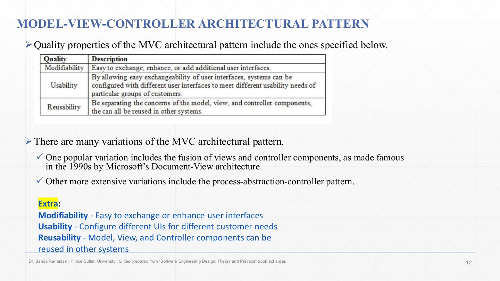
The quality properties table: modifiability (easy to exchange, enhance or add user interfaces), usability (because UIs are exchangeable, systems can be configured with different interfaces for different groups of users), reusability (with concerns separated, model, view and controller components can be reused in other systems).
MVC has many variations: Microsoft’s 1990s Document-View architecture fused view and controller into one component; presentation-abstraction-control is a more extensive variant (the slide calls it “process-abstraction-controller”).
Remember the three qualities as the payoff of separating the UI: change it, tailor it, reuse the parts. The cost is more objects and update paths, which isn’t worth it for a trivial static screen.
True or false: MVC lets the user interface change without changing the model.
True — Views and controllers depend on the model, not the other way round (apart from notifications), so UIs can be swapped or added.
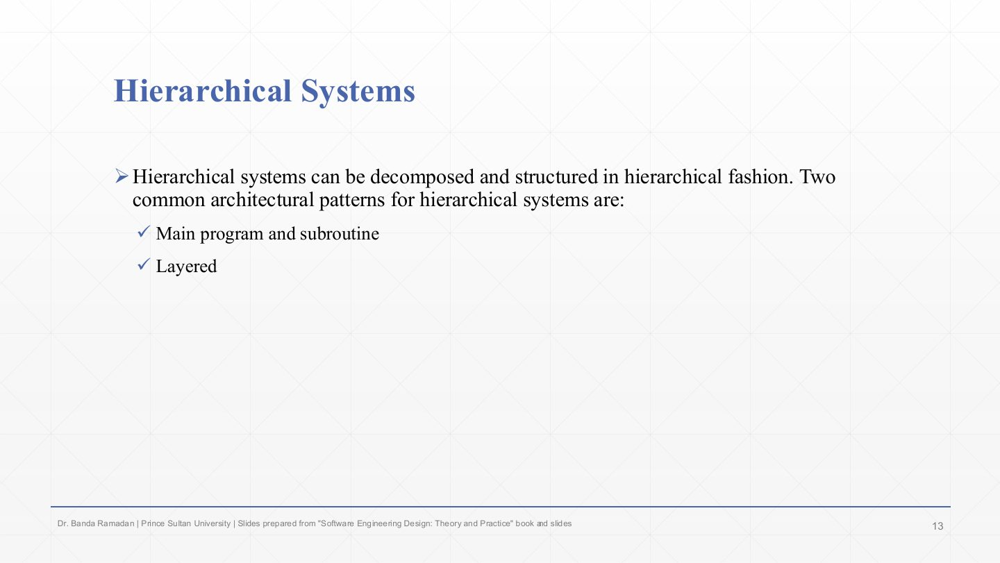
Hierarchical systems can be decomposed and structured in levels.
Two common patterns: main program and subroutine (a main routine calls subroutines, which call lower ones) and layered. This lecture covers layered.
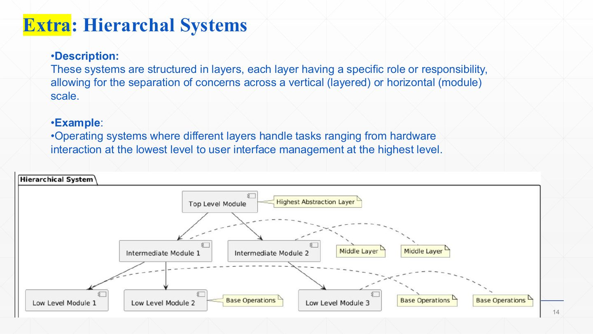
Hierarchical systems are structured in layers, each with a specific role, separating concerns vertically (layers) or horizontally (modules).
Example: an operating system, from hardware interaction at the bottom to user-interface management at the top.
The diagram: a top-level module (highest abstraction) uses intermediate modules (middle layer), which use low-level modules (base operations). Calls go downward; higher levels never need to know how lower ones work.
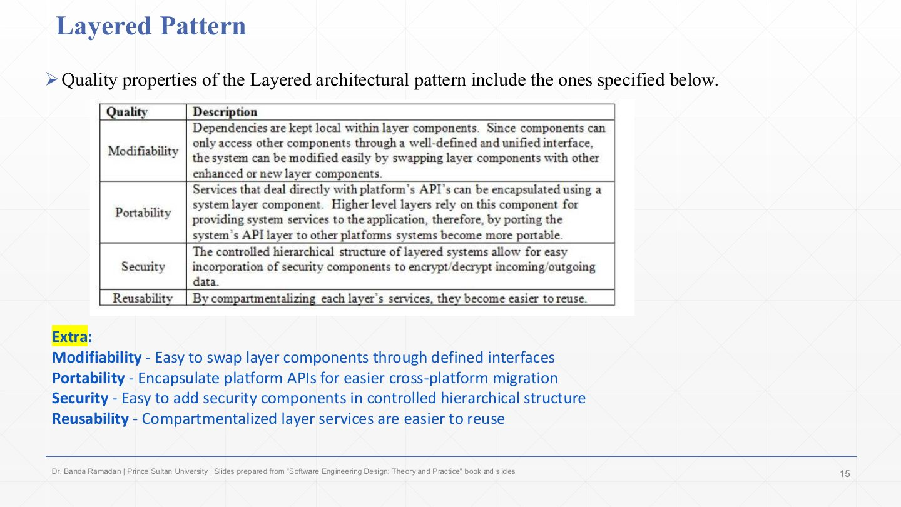
Modifiability: dependencies stay local within a layer; components only reach others through a well-defined, unified interface, so a layer component can be swapped for an enhanced one.
Portability: everything that touches the platform’s APIs is encapsulated in one layer; port that layer and the higher layers move to the new platform unchanged.
Security: the controlled hierarchy makes it easy to insert security components, e.g. a layer that encrypts and decrypts all incoming and outgoing data.
Reusability: compartmentalised layer services are easier to reuse.
A payroll application must allow the user interface, salary-calculation rules, and data-storage technology to evolve with minimal impact on one another. For example, replacing the database should not require rewriting payroll policies, and interface code should not contain persistence logic. Which architectural style?
Layered: UI, business rules and data storage are separate layers that interact only through defined interfaces, so each can change independently.
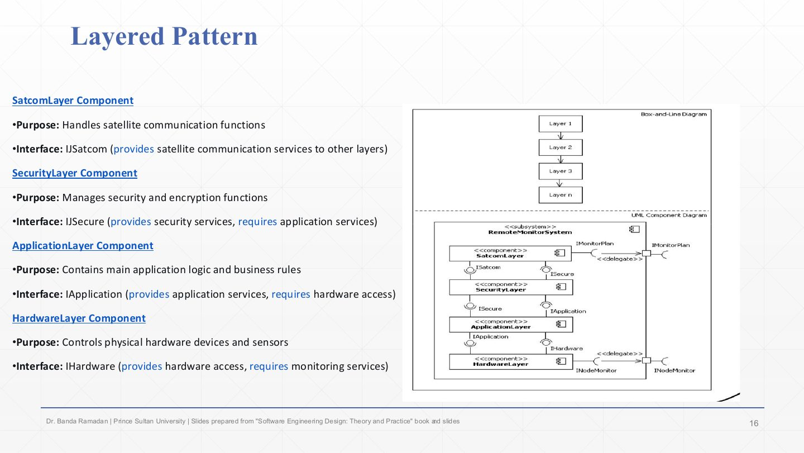
A layered remote-monitoring system, top to bottom. SatcomLayer handles satellite communication; it provides ISatcom to the outside.
SecurityLayer handles security and encryption; it provides ISecure to the layer above and requires the application layer’s services.
ApplicationLayer holds the main logic and business rules; it provides IApplication and requires hardware access.
HardwareLayer controls the physical devices and sensors; it provides IHardware. In the UML diagram each layer requires exactly the interface of the layer below; the subsystem’s external ports (IMonitorPlan, INodeMonitor) are delegated to the top and bottom layers. Each extra layer adds a call, which is the pattern’s performance cost.
In a strict layered architecture, which layers may a layer use, and what is the main drawback?
Only the layer directly below it, through that layer’s interface. Drawback: requests pass through every layer, adding performance overhead (and sometimes pass-through code).
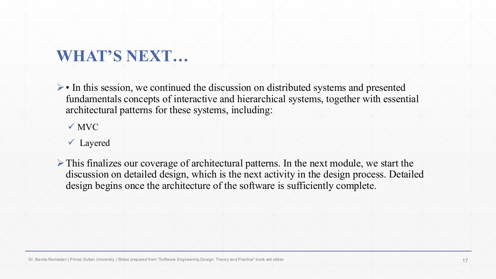
This completes the architectural patterns: blackboard, pipes and filters, client–server, broker, MVC and layered.
Next: detailed design (Chapter 5), which starts once the architecture is sufficiently complete.